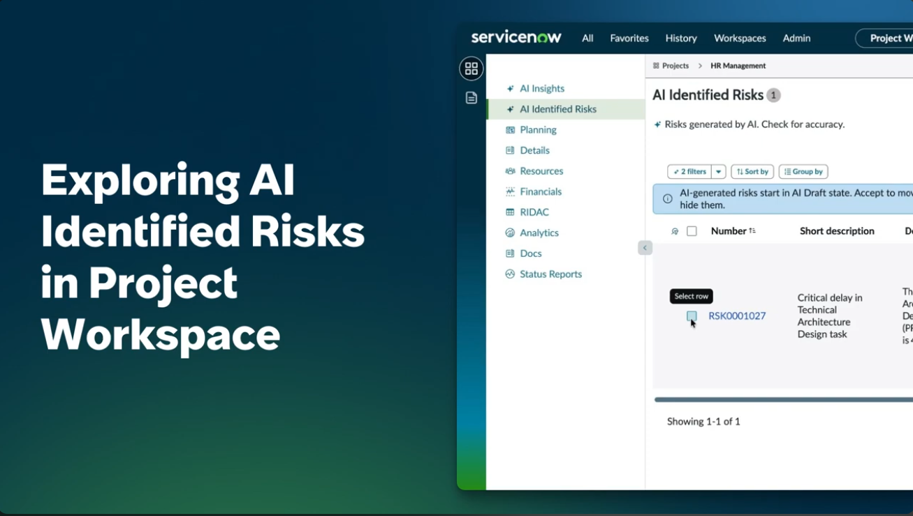
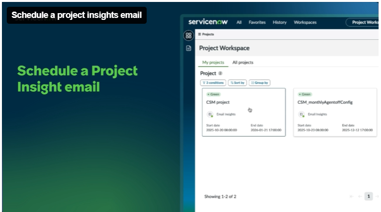
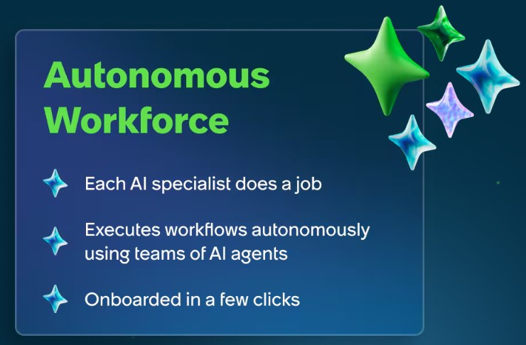
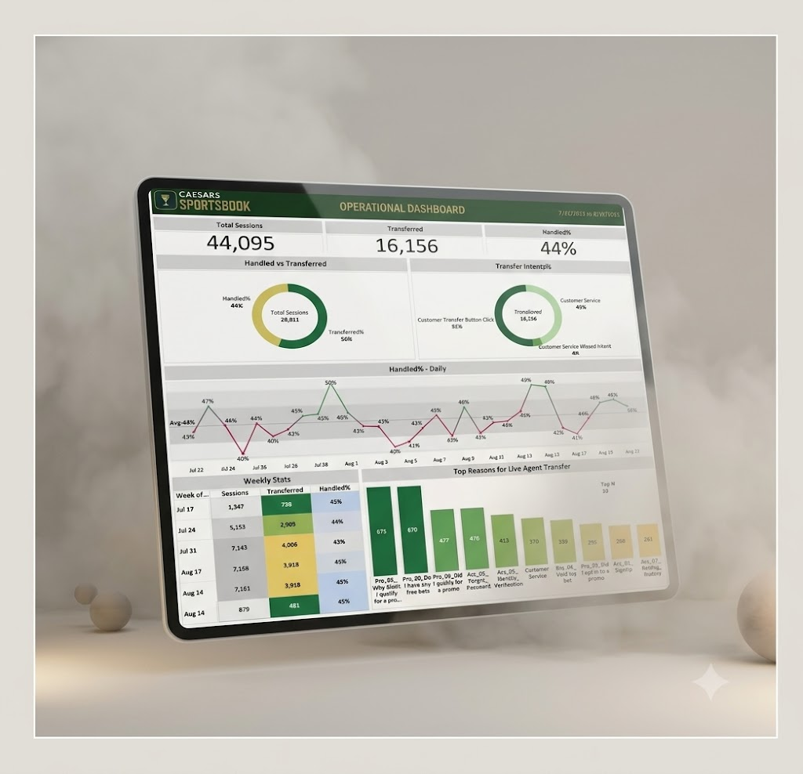
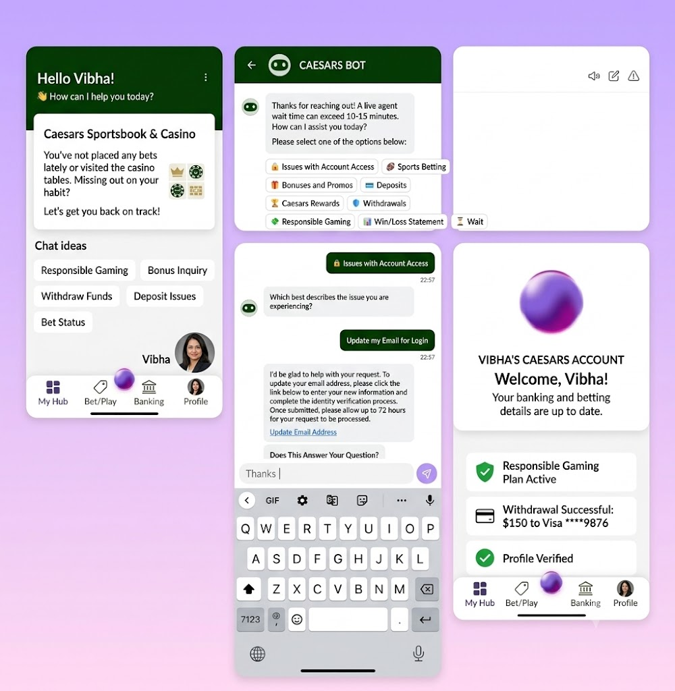

Welcome to My World: AI, Product Thinking & Personal Growth
A personal introduction to my journey, interests and the ideas that shape how I think about product and technology.
Hello & Welcome!
With a strong background in product management and Artificial Intelligence, I bring a strategic and analytical approach to solving complex challenges. My passion for continuous learning and adaptability drives me to stay ahead in an ever-evolving industry. Explore my portfolio to see how my experience can help power your next success.
Read All →Product, AI, research, dashboards and prototypes I've worked on or explored.

Uses AI to surface and populate project risks early, helping teams spot issues before they become blockers.

Analyzes projects across multiple dimensions and delivers timely, actionable insights in the inbox and Project Workspace.

An autonomous project-task experience that evaluates context, selects the right AI agent, executes the work and keeps task status moving.

A product roadmap translating an AI chatbot concept into discovery, milestones, features and measurable outcomes.

User and market research turning survey signals, personas and problem discovery into clearer product opportunities.

A product growth exploration focused on retention, engagement and turning user behavior into product opportunities.

A product concept exploring a lightweight to-do experience inside WhatsApp.

A Tableau dashboard translating operational data into a clearer view of performance and decision-making.
Analytics and dashboard work spanning Tableau, Power BI and product decision support.
Rapid AI prototypes exploring workflows, agent experiences and new product possibilities.

Built English, Hindi & Arabic chatbots/voicebots for enterprise & government clients.
+45% automationFrom data to AI-powered products.
My work sits at the intersection of technology, data and user problems. I enjoy taking ambiguous problems, finding the simplest useful direction, and turning ideas into products people can actually use.
Put me in an unfamiliar space, give me some time, and I’ll find my way through it. I don’t...
Put me in an unfamiliar space, give me some time, and I’ll find my way through it. I don’t need to know everything on day one. I’m comfortable learning as I go and figuring out what needs to be done.
One of the things I’ve consistently heard in feedback is that I’m strong at execution. I like turning ideas into something real — and I’m happiest when things actually move forward.
I naturally pay attention to the small things. It helps me catch gaps, ask the extra question, and make sure the final product feels right. The flip side? Sometimes I can care about the details a little too much. I’m learning when to zoom in and when to step back.
Whether it’s a customer, a teammate, or someone I disagree with, I try to understand where they’re coming from before jumping to a conclusion.
I value being honest, dependable, and straightforward — especially when it would be easier not to be.
Ideas, product perspectives and lessons from the work.
A personal introduction to my journey, interests and the ideas that shape how I think about product and technology.
A product-growth exploration covering user pain points, competitive patterns, engagement ideas and ways to bring inactive users back.
Exploring how AI agents can change the way product teams work, decide and execute.
A practical look at retrieval-augmented generation through a product lens.
A journey from working with data and insights to building and shaping products.